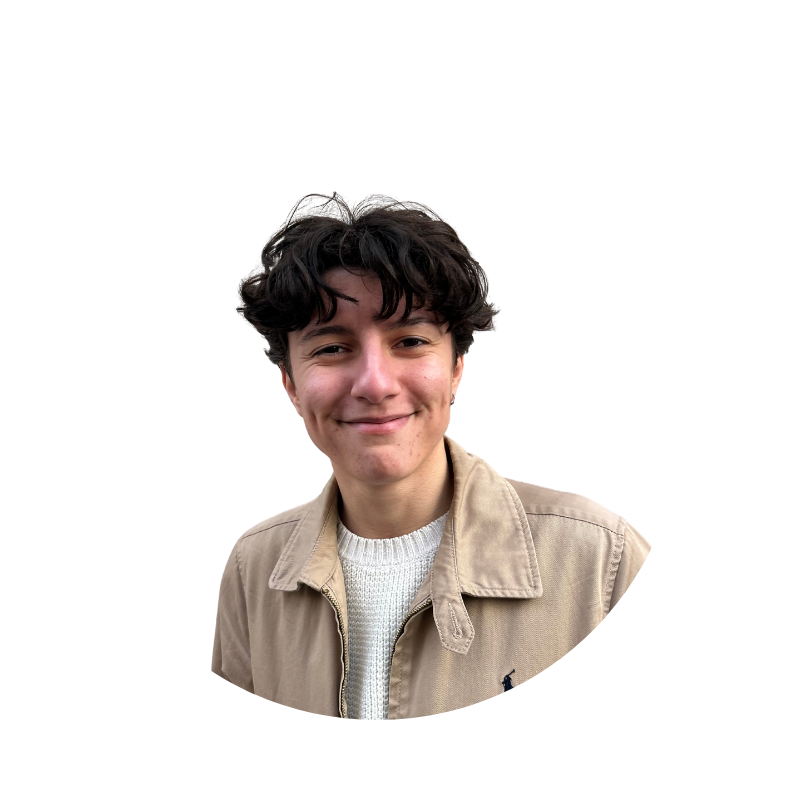

Actuellement en M2 Data Science à l'Université Claude Bernard Lyon 1, je suis à la recherche d'un stage
de fin d'études pour une durée de 5-6 mois. Passionnée par l’univers de la data,
j’aime transformer les données en informations stratégiques pour aider à la prise de décision.
Curieuse et analytique, je prends plaisir à explorer, modéliser et visualiser les données afin d’en tirer
des insights pertinents. Toujours en veille sur les nouvelles technologies et méthodes d’analyse, je suis
motivée par les défis et l’innovation dans ce domaine en constante évolution.
Compétences
Langages
Python
SQL
HTML
CSS
Javascript
Java
Bibliothèques
Pandas
Numpy
Scikit-learn
D3.js
React
Frameworks
TensorFlow
Keras
PyTorch
Express
Logiciels
Expériences professionnelles
Stage L3 - Université Claude Bernard Lyon 1 📍 Villeurbanne
De juin 2023 à août 2023
Stage sur le projet Saphir :
- Mise en place d’un système d’export-import des cours
- Intégration d’un module de pré-traduction automatique des cours
via Deepl
Employée flux entrant - IKEA 📍 Vénissieux
De juillet 2022 à avril 2023
Préparatrice de commandes - Chronodrive 📍 Mions
De septembre 2021 à novembre 2021
Employée polyvalent - Burger King 📍 Saint-Clément-de-Rivière
De septembre 2020 à août 2021
Projets
Prédiction d'émotion sur audio
Lien
github
Projet visant à utiliser des méthodes de machine learning pour prédire
l'émotion d'un individu à partir d'un audio de ses paroles.
- Création d'une interface web avec Streamlit
- Implémentation d'une API avec FastAPI
- Développement d'un modèle CNN pour prédire émotion à partir de
caractéristiques de l'audio (MFCC, MelSpectrogram, ...)
- Mise en place d'un système de reporting avec Evidently
Résumé de vidéos Youtube
Lien
github
Projet de NLP avec pour objectif de faire un résumé du contenu d'une vidéo Youtube.
- Création d'un jeu de données : transcript vidéos Youtube / résumés
- Fine-tuning de 2 modèles Hugging Face : DistilBart et T5-small
- Création d'une API avec FastAPI
Visualisation des données du World Happiness Report
Lien projet
Projet effectué avec la bibliothèque D3.js. Création de visualisations intéractives
pour explorer les données du World Happiness Report à travers les années (2015-2023).
- Nettoyage / Unification des données
- Création de différentes visualisations pour explorer les données : carte, bar-chart, line-chart,
...
Formation
M2 Data Science - Université Claude Bernard Lyon 1 📍 Villeurbanne
Depuis septembre 2024
Principaux cours suivis :
- Machine Learning
- Deep Learning
- Data Mining
- Data Visualization
M1 Informatique - Université Claude Bernard Lyon 1 📍 Villeurbanne
De septembre 2023 à juin 2024
Principaux cours suivis :
- Gestion de projet web (projet à 6 personnes)
- Apprentissage et analyse de données
- Bases de l’intelligence artificielle
- Analyse d’images
Licence Informatique - Université Claude Bernard Lyon 1 📍
Villeurbanne
De septembre 2019 à juin 2023
Principaux cours suivis :
- Programmation en C++
- Base de données
- Ergonomie applications web et logiciels